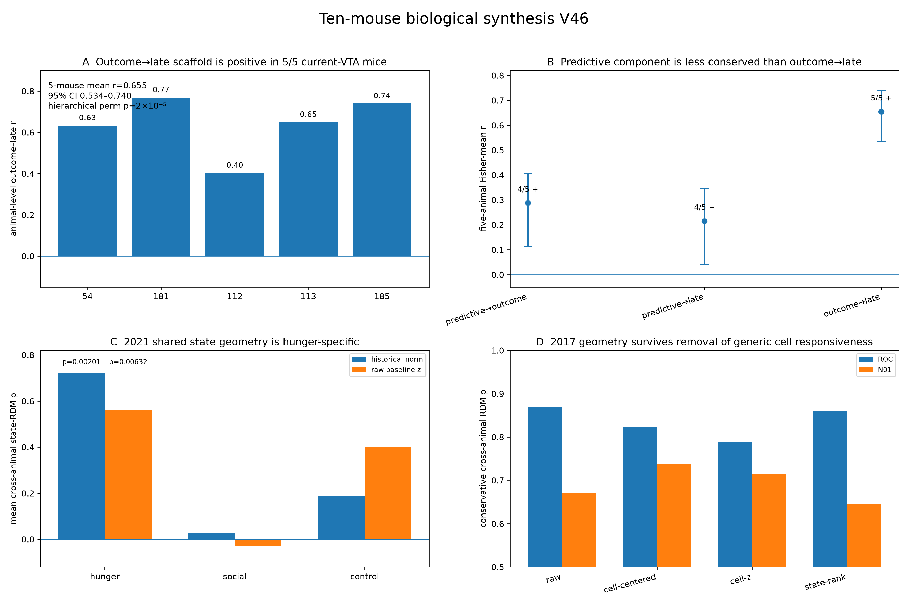
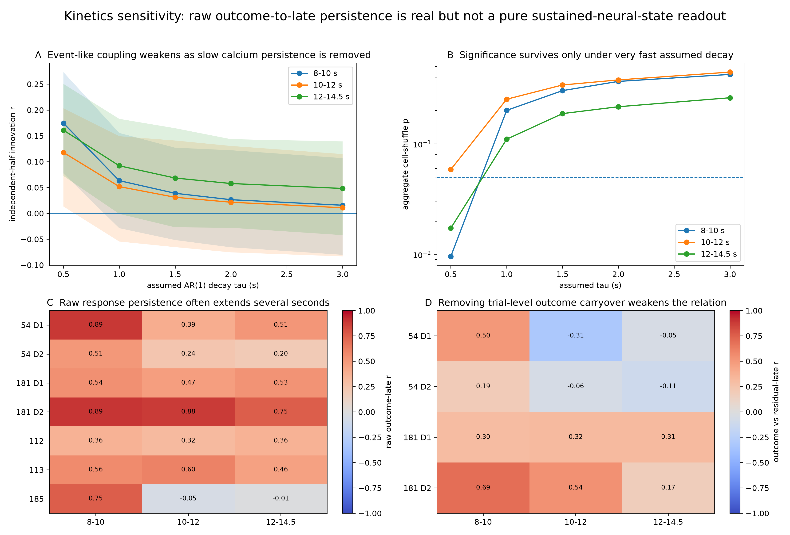

5鼠 VTA 共同结构
r = 0.655
Outcome→late coupling 在 5/5只鼠中均为正；animal bootstrap 95% CI 0.534–0.740；hierarchical cell-identity permutation p=2×10⁻⁵。
本页把目前已经解析清楚的十只真实动物统一到同一个 biological authority： 5只 current VTA、3只 2021 named animals、2只 2017 legacy animals。 这里把数据质量、统计功效和实验设计分开处理。 当前 VTA 最稳的跨动物结果是 outcome-to-late response structure； 但我们明确不把它直接解释成已独立证明的 kinetics-independent sustained latent state。
Outcome→late coupling 在 5/5只鼠中均为正；animal bootstrap 95% CI 0.534–0.740；hierarchical cell-identity permutation p=2×10⁻⁵。
Hunger context 的 state geometry 在3只 named animals 中共享；historical normalization 下 exact global state-label null p=0.0020。
每个细胞先减去跨11个 state 的均值后，ROC cross-animal geometry 依然很强，说明不是 generic responsive-cell ranking 造成。
首页保留全局结论；文章级复现、新8只鼠和QC全部进入专门结果页。
这里保留的是能跨方法、跨动物或跨表示成立的结构，不把分析特异或 acquisition 特异现象包装成全局结论。

十鼠综合图。 A：5只 current-VTA 小鼠的 outcome→late coupling；B：predictive component 更不稳定；C：2021 跨鼠 geometry 主要在 hunger context 共享；D：2017 geometry 在去除 generic cell responsiveness 后仍存在。PDF
ANM54/181 是完整 D3–D9 longitudinal reward-contrast cohort；ANM112、ANM113-conditioning、ANM185 是完整分析的 conditioning datasets。5–6个 imaging-linked trials 只影响某些检验的统计分辨率，不是影像质量降级理由。
| Mouse | Outcome→late r | Predictive→outcome | Predictive→late | 解释 |
|---|---|---|---|---|
| ANM54 | 0.633 | 正 | 正 | Longitudinal primary cohort。 |
| ANM181 | 0.769 | 正 | 正 | Longitudinal primary cohort。 |
| ANM112 | 0.404 | 正 | 正 | 高质量 single-day conditioning dataset。 |
| ANM113 | 0.649 | 正 | 正 | Conditioning session 高质量；perfusion 是单独的 motion-caveat session。 |
| ANM185 | 0.740 | −0.039 | −0.104 | Outcome→late 很强，但 predictive loading 与另外4只不同。 |
原始 MATLAB authority 已确认每只动物在 hunger/social/control 三个 context 中使用完全一致的 vtSel；geometry 还通过了 raw-z vs historical normalization、bootstrap 和 leave-one-trial 检验。
Historical normalization 下 state-RDM mean ρ=0.721，exact global state-label null p=0.0020；raw-baseline-z 下仍有 mean ρ=0.560，p=0.0063。
Social geometry 不稳定；control 较弱且 representation-dependent。Cell bootstrap 中 hunger 比 social 更高的比例在两种 representation 下都是 99.96%。
ANM492241：38 cells；ANM496190：44 cells；ANM496191：23 cells。9/9 animal×context matrices frame count 精确、100% finite、0 flat cells。
Legacy 319-cell matrix 实际解析为2只真实动物。ANM372321 的两条 source lineage 只作为 within-animal robustness units，从未当作两只动物。
每个 cell 先减去其跨11个 states 的均值后，ROC cross-animal RDM ρ 仍为 0.824 / 0.851；N01 为 0.747 / 0.738。
Cell-wise z-scoring 后，ROC 仍为 0.789 / 0.808，N01 为 0.739 / 0.715。State-label permutation 显著，cell-bootstrap CI 保持为正。
这个边界直接写在主结果里，不藏到补充材料。

Raw delayed coupling 在8–10 s仍是5/5为正，但去除慢荧光 carryover 后关系明显减弱。PDF
8–10 s：mean r=0.664，5/5 positive，95% CI 0.503–0.761。
10–12 s：r=0.421，4/5。
12–14.5 s：r=0.384，4/5。
在 high-trial MAIN sessions 中，AR(1) positive-innovation analysis 在假定 calcium decay τ≥1 s 后 aggregate residual coupling 不再显著。因此可以说存在可重复的 outcome-to-late response organization，但不能据此独立证明 kinetics-free sustained latent state。
“结果可靠”和“历史 raw movie 今天能否重新审计”是两件不同的事。
| Cohort | 当前质量结论 | 仍保留的边界 |
|---|---|---|
| ANM54 / 181 | V27 raw-imaging、residual motion、独立 ROI、extraction sensitivity、cross-day identity 全链条重审。 | 保留 small residual local deformation，不写成 zero motion。 |
| ANM112 / 113-conditioning / 185 | Motion、strict soma ROI、独立 image support、extraction sensitivity 均强；短 trial 数不降级 image quality。 | 113 perfusion 单独保留 motion caveat。 |
| 2021 named | Same vtSel、clean matrices、representation robustness、bootstrap、split-half、leave-one-trial。 | 旧 raw mount 当前不可访问，因此不能重做现代 per-frame residual-motion audit。 |
| 2017 legacy | Exact lineage provenance、clean matrices、双 representation、residualization、state permutation、leave-one-state。 | 原始 daily raw imaging 当前未挂载。 |
这里只发布 derived summary outputs，不发布 raw movie、内部盘符路径或其他不必要的源数据。